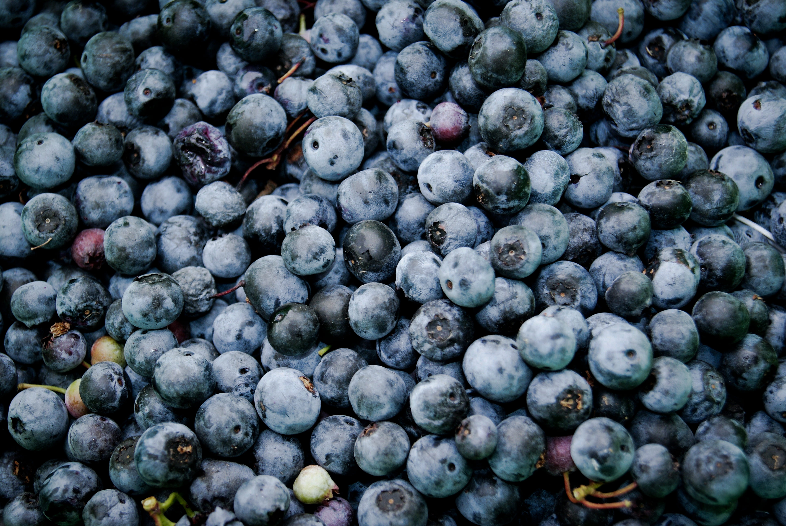

<html><!-- HTML5 shim and Respond.js for IE8 support of HTML5 elements and media queries--><!-- WARNING: Respond.js doesn't work if you view the page via file://--><!--[if lt IE 9]<script src="https://oss.maxcdn.com/html5shiv/3.7.3/html5shiv.min.js"></script>
<script src="https://oss.maxcdn.com/respond/1.4.2/respond.min.js"></script>--><!--[endif]--><meta charset="utf-8"/><meta name="viewport" content="width=device-width,initial-scale=1"/><meta http-equiv="X-UA-Compatible" content="IE=edge"/><title>Health yeah! | Скажи да здоровью!</title><link rel="shortcut icon" href="images/favicon.ico"/><link rel="stylesheet" href="stylesheets/style.css"/></html><body><div class="flex-container"><main class="flex-contant"><section class="main"><h1 class="main__title"><a href="/"><svg width="100%" height="30%"><use xlink:href="images/symbols.svg#logo-2"></use></svg></a></h1></section><form class="form-block row"><input class="form-block__input" type="text" placeholder="Введите код добавки"/><button class="form-block__btn" type="button"><svg width="20px" height="20px"><use xlink:href="images/symbols.svg#search"></use></svg></button></form><section class="result"><article class="e e--normal"><div class="e__element"><h2 class="e__title">E-100</h2></div><div class="e__element"><span class="e__label">Название:&nbsp;</span><span class="e__name">Куркумин (Curcumin)</span></div><div class="e__element"><span class="e__label">Категория:&nbsp;</span><span class="e__category">Красители</span></div><div class="e__element"><span class="e__label">Опасность:&nbsp;</span><span class="e__danger e__danger--normal">Очень низкая</span></div><div class="e__element"><span class="e__description">Куркумины (пищевая добавка Е100) — ярко-желтые натуральные красители, получаемые из растения куркумы (Curcuma longa).</span></div></article></section></main><footer class="footer flex-footer"><div class="copyright copyright--info"><p>Информация взята c&nbsp;<a href="http://dobavkam.net/">сайта</a></p></div><div class="copyright copyright--project"><p class="copyright__line">Разработано студией</p><svg class="copyright__line" width="140px" height="40px"><use xlink:href="images/symbols.svg#company-logo"></use></svg></div></footer><script src="javascript/svg4everybody.js"></script><script>svg4everybody();</script><script src="javascript/picturefill.js"></script><script src="javascript/script.js"></script></div></body>